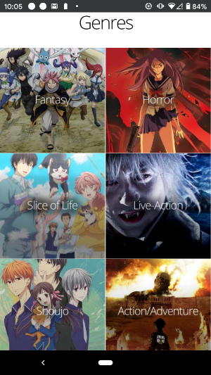
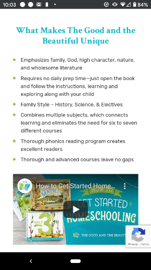

Visual Hierarchy: Audible
When visiting a page for a specific book on Audible, the first draw to your attention using a large white square to the membership plan. Once in the white box, your eyes are drawn to the large yellow button encouraging users to start a free trial. Finally, if not enticed by the monthly membership, your eyes move down to the next large button with the price to purchase the book. This movement using size and color, exemplifies visual hierarchy.
Hick's Law: Funimation
Funimation is home to anime in many genres. They have anime in Japanese with English subtitles as well as anime dubbed to English. If presented with a page of all the anime on the website, it can be overwhelming to get through. To make the website more user friendly, they implement Hick's law offering filters for the genre, language, rating, and more.
White Space & Clean Design: The Good and the Beautiful
The Good and the Beautiful, a homeschool curriculum company, utilizes a simple layout to guide its users to their paid and free content. Pastel colors complement its clean white design. The use of white space allows its users to focus on the curriculum offered and successfully find the subjects and grade levels they are there to find.